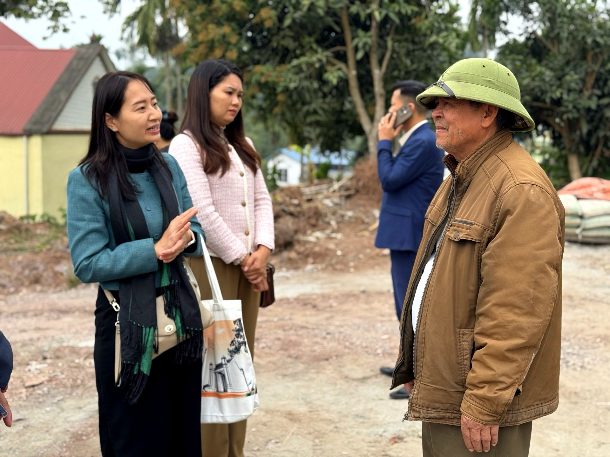
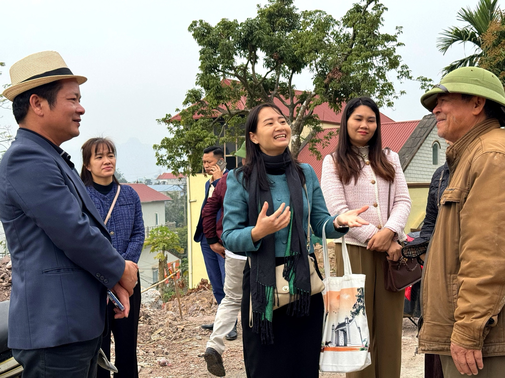
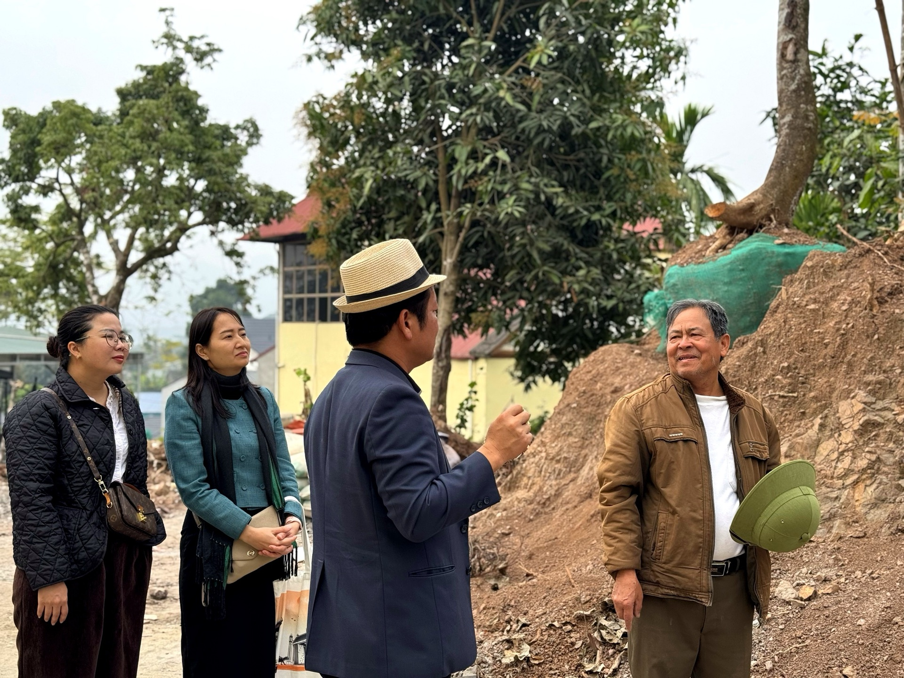

Loại hìnhTypeType
Điểm trạm tâm linhSpiritual SanctuaryHalte spirituelle

Nhà thờ họ ông Hà Huy Chế tại thôn Gốc Báng là một trong những không gian di sản cộng đồng có chiều sâu lịch sử đặc biệt của Mường Cốc. Trong khuôn viên nhà thờ họ, còn lưu giữ 4 cọc nhà sàn cổ – chứng tích của những nếp nhà người Mường từ nhiều thế hệ trước – là tư liệu vật chất hiếm hoi về kiến trúc cư trú truyền thống nơi đây.
Ông Hà Huy Chế, người đang trông coi và gìn giữ nhà thờ họ, là người am hiểu tường tận về lịch sử các đời người Mường trong dòng họ và cộng đồng bản làng. Khách tham quan không chỉ được tìm hiểu về không gian thờ tự mà còn được nghe những câu chuyện truyền đời về phong tục, lối sống và ký ức tập thể của người Mường Gốc Báng.
Đây cũng là điểm đã có kinh nghiệm đón đoàn khách quốc tế, với không gian giao lưu hát – múa Mường được tổ chức ngay trong khuôn viên nhà thờ họ – tạo nên trải nghiệm văn hoá sâu sắc và chân thực.
Mr. Ha Huy Che's ancestral house in Goc Bang village is a community heritage space with a particularly deep history in Muong Coc. Within the ancestral house compound, four ancient stilt house pillars are preserved – evidence of Muong homes from many generations past – offering rare material documentation of the traditional residential architecture of this area.
Mr. Ha Huy Che, who oversees and preserves the ancestral temple, possesses profound knowledge of the Muong people's history across generations within his lineage and the village community. Visitors can not only explore the sacred space but also hear timeless stories about the customs, lifestyle, and collective memories of the Muong Goc Bang people.
This site also has experience hosting international groups, with Muong singing and dancing cultural exchanges organized right within the family's ancestral temple grounds – creating a profound and authentic cultural experience.
La maison ancestrale de M. Ha Huy Che dans le village de Goc Bang est un espace patrimonial communautaire avec une histoire particulièrement profonde à Muong Coc. Dans l'enceinte de la maison ancestrale, quatre anciens piliers de maisons sur pilotis sont conservés – témoignages des habitations Muong de nombreuses générations passées – offrant une rare documentation matérielle de l'architecture résidentielle traditionnelle de cette région.
M. Hà Huy Chế, qui s'occupe et préserve le temple ancestral, est un expert de l'histoire des générations Mường au sein de sa lignée et de la communauté villageoise. Les visiteurs peuvent non seulement découvrir l'espace de culte, mais aussi écouter des récits ancestraux sur les coutumes, le mode de vie et la mémoire collective du peuple Mường Gốc Báng.
Ce site a également l'expérience d'accueillir des groupes internationaux, avec des échanges culturels de chants et danses Muong organisés directement dans l'enceinte du temple ancestral de la famille – créant une expérience culturelle profonde et authentique.
| Tham quan nhà thờ họVisit the ancestral temple.Visite du temple ancestral. | Giới thiệu không gian thờ tự, cọc nhà sàn cổIntroduction to the worship space and ancient stilt house pillars.Présentation de l'espace de culte et des anciens piliers de maisons sur pilotis. |
| Nghe kể chuyện dòng họ và làng MườngListen to tales of Mường families and village history.Écoutez les récits des familles et de l'histoire du village Mường. | Ông Chế chia sẻ về lịch sử các đời người MườngMr. Che shares stories about the history of Muong generations.Monsieur Che partage l'histoire des générations Muong. |
| Giao lưu hát – múa MườngMường singing and dancing exchangeÉchange de chants et danses Mường | Biểu diễn và giao lưu văn nghệ dân gianEnjoy folk art performances and cultural exchange.Profitez de spectacles d'art populaire et d'échanges culturels. |
| Chụp ảnh check-inPhoto OpportunitiesSpots photo | Không gian nhà thờ họ và cọc nhà sàn cổAncestral house and ancient stilt house pillars.Espace de la maison ancestrale et des anciens piliers de maison sur pilotis. |
| Đón khách đoànGroup WelcomeAccueil de groupes | Kể cả đoàn quốc tế, phục vụ qua đặt lịch trướcIncluding international groups, served by prior appointment.Y compris les groupes internationaux, service sur rendez-vous préalable. |


Nhà thờ họ ông Chế hướng tới trở thành điểm trải nghiệm di sản cộng đồng nổi bật trong tuyến du lịch Mường Cốc – nơi kết nối du khách với chiều sâu lịch sử và văn hoá dòng họ người Mường. Kinh nghiệm đón khách quốc tế là nền tảng để tiếp tục phát triển các gói trải nghiệm văn hoá chuyên sâu, đặc biệt cho khách nghiên cứu, học thuật và du lịch di sản. Điểm đến Du lịch cộng đồng Mường Cốc, Xã Mỹ Đức – Thành phố Hà NộiMr. Che's ancestral house aims to become a prominent community heritage experience on the Muong Coc tourism route – connecting visitors with the profound history and culture of the Muong clan. Experience hosting international guests is the foundation for further developing in-depth cultural experience packages, especially for research, academic, and heritage tourism guests. Muong Coc Community-Based Tourism Destination, My Duc Commune – Hanoi City.La maison ancestrale de M. Chế aspire à devenir un point d'expérience du patrimoine communautaire remarquable sur l'itinéraire touristique de Mường Cốc – un lieu qui relie les visiteurs à la profondeur de l'histoire et de la culture du clan Mường. L'expérience d'accueil des visiteurs internationaux constitue la base pour continuer à développer des forfaits d'expériences culturelles approfondies, en particulier pour les chercheurs, les universitaires et les touristes du patrimoine. Destination de Tourisme Communautaire Mường Cốc, Commune de Mỹ Đức – Ville de Hà Nội.